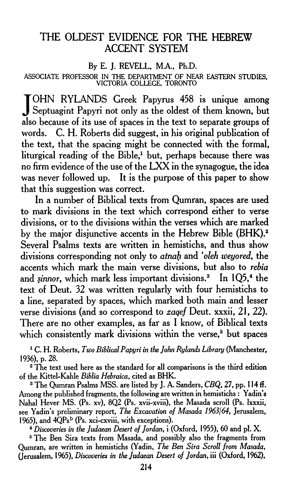

The Oldest Evidence of the Hebrew Accent System
THE OLDEST EVIDENCE FOR THE HEBREW ACCENT SYSTEM
By E. J. REVELL, M.A., Ph.D.
ASSOCIATE PROFESSOR IN THE DEPARTMENT OF NEAR EASTERN STUDIES, VICTORIA COLLEGE, TORONTO
JOHN RYLANDS Greek Papyrus 458 is unique among
Septuagint Papyri not only as the oldest of them known, but also because of its use of spaces in the text to separate groups of
words. C. H. Roberts did suggest, in his original publication of the text, that the spacing might be connected with the formal, liturgical reading of the Bible,1 but, perhaps because there was no firm evidence of the use of the LXX in the synagogue, the idea was never followed up. It is the purpose of this paper to show that this suggestion was correct.
In a number of Biblical texts from Qumran, spaces are used to mark divisions in the text which correspond either to verse divisions, or to the divisions within the verses which are marked by the major disjunctive accents in the Hebrew Bible (BHK).2 Several Psalms texts are written in hemistichs, and thus show divisions corresponding not only to atnah and ‘oleh weyored, the accents which mark the main verse divisions, but also to rebia and sinnor, which mark less important divisions.3 In 1Q5,4 the text of Deut. 32 was written regularly with four hemistichs to a line, separated by spaces, which marked both main and lesser verse divisions (and so correspond to zaqef Deut. xxxii, 21, 22). There are no other examples, as far as I know, of Biblical texts which consistently mark divisions within the verse,5 but spaces
1 C. H. Roberts, Two Biblical Papyri in the John Rylands Library (Manchester,
1936), P. 28.
2 The text used here as the standard for all comparisons is the third edition
of the Kittel-Kahle Biblia Hebraica, cited as BHK.
3 The Qumran Psalms MSS. are listed by J. A. Sanders, CBQ, 27, pp. 114 ff. Among the published fragments, the following are written in hemistichs : Yadin's Nahal Hever MS. (Ps. xv), 8Q2 (Ps. xvii-xviii), the Masada scroll (Ps. Ixxxii, see Yadin’s preliminary report, The Excavation of Masada 1963/64, Jerusalem, 1965), and 4QPsb (Ps. xci-cxviii, with exceptions).
4 Discoveries in the Judaean Desert of Jordan, i (Oxford, 1955), 60 and pl. X. 5 The Ben Sira texts from Masada, and possibly also the fragments from
Qumran, are written in hemistichs (Yadin, The Ben Sira Scroll from Masada, (Jerusalem, 1965), Discoveries in the Judaean Desert of Jordan, iii (Oxford, 1962),
214
215 THE JOHN RYLANDS LIBRARY
corresponding to disjunctive accents occur occasionally: e.g. 1 QIsa 50 :2,1 where spaces correspond to segolta and atnah, and 11 QPsa,2 corresponding to atnah Psalms 119:18, 42, 139, to dehi Psalm cxxii, 4, 6. Such spacing is, however, abnormal in these texts, and may not be an intentional mark of division within the verse. The normal practice in Qumran Biblical manuscripts is to mark divisions between words, but not between phrases or verses. In the few cases where such divisions are marked, the purpose must surely have been to aid the reader by marking the pauses necessary in recitation.
The fragments of the scroll of the twelve prophets published by Barthelemy3 provide an example of the marking of divisions within the verse in a Greek text. These are marked by the use of a large letter at the beginning of a new phrase, often separated from the preceding by a small space. Larger spaces mark divi sions between the verses. Individual words are not separated. In the material which I have checked,4 the divisions marked correspond to silluq, atnah, and zaqef, and, possibly in one case, to tifha.5 The text is regularly divided into hemistichs in this
75). The Biblical chant was also used with this book, as is shown by the Biblical accents marked in the medieval texts. Divisions between verses are not normally marked in Qumran texts, but Psalm 119 is written with one verse per line in the published examples, and in 3Q3 (ibid. p. 95 and pl. XVIII) Lamentations i was written in the same way, and in chapter 3 the three verses forming a stanza were written on one line, and separated by spaces. These types of layout also were probably connected with the formal reading of the text.
1 Ed. M. Burrows, The Dead Sea Scrolls of St. Mark's Monastery, vol. i (New
Haven, 1950).
2 Ed. J. A. Sanders, Discoveries in the Judaean Desert of Jordan, vol. iv (Oxford,
1965).
3 Les devanciers d’Aquila, Supplements to Vetus Testamentum X (Leiden, 1963), text, pp. 170 if., photographs at p. 168, and in Revue Biblique, lx (1953) at p. 24. A few additional fragments were published by B. Lifshitz in Yediot, xxvi (1962), 184 if., and pl. 18.1.
4 I have only used the material covered by the photographs. Barthelemy was not interested in giving an exact representation of the text in this edition (op. cit. p. 169) and so does not always mark divisions correctly. I would read a capital at αυτ]ον On (Hab. i. 16), εμοι Kai (ii. I), έθνη Kai (ii. 5) ae Kai (ii. 17), apyvjpow Kai (ii. 19), where the edition does not, but not at σκοπα ουκ (ii. 4), where it does.
6 At αλαζων Kai (Hab. ii. 5) according to the edition, but I think it probably
wrong.
THE HEBREW ACCENT SYSTEM 216
way through the first chapter of Habakkuk and part of the second.1 After the atnah in Habakkuk ii. 17, however, this regularity disappears, and divisions within the verses are marked only sporadically. In the Zacharia fragments, which are by a later hand, words are separated by spaces, but no divisions are marked between phrases or verses.
The first hand in this manuscript, then, clearly divided at least part of the text into hemistichs. Again, one cannot doubt that the purpose was to mark the pauses necessary in reading. Since this is a Greek text, its evidence is of greatest significance for the problem of the spaces in Rylands Greek Pap. 458. Besides the separation of verses, and divisions within verses, the Qumran text also shows another feature of later Hebrew Biblical texts : division into paragraphs.2 The Massoretic traditions on the paragraphing of the twelve prophets are unstable, so Barthélemy is understandably hesitant to equate the para graphing of his manuscript to the Massoretic “ open ” and “ closed ” sections. A fine example of the regular use of these divisions in a Greek Pentateuchal manuscript is, however, to be found in Papyrus Fouad inv. 266.3
In this manuscript paragraphs are marked by a combination of spacing and a paragraphes mark : a short stroke over the first letter of the first full line of the section. They occur as follows : (i) Corresponding to a “ closed ” section in the Hebrew Bible : (a) The previous section ends towards the end of a line. The remaining space is left blank. The new section, marked by a paragraphes, begins at the margin on the following line. Thus Deuteronomy xviii. 6, and (with only the paragraphes extant) Deuteronomy xx. 19; xxiii. 15 (Heb. 16). (b) The previous
1 Expected divisions (where the Hebrew has zaqef) do not seem to be marked
at ορασιν και (Hab. ii. 2), nor at ii. 4 (see note 4, p. 215).
2 See Barthélemy’s description (op. cit. p. 165 f.). The Hebrew Biblical texts from Qumran also normally show paragraph divisions. See C. Perrot in Revue Biblique, Ixxvi (1969), 52 f., 78 f.
3 Published by F. Dunand ; the introduction as Publications de l institut français d’archéologie orientale du Caire, Recherches d’archéologie etc. xxvn (Cairo, 1966), and the text in Études de papyrologie, ix. 81-150 with 15 plates (Cairo, 1966). I am most grateful to my colleague Professor J. W. Wevers for drawing this text to my attention, and for his comments on this paper.
217 THE JOHN RYLANDS LIBRARY
section ends towards the beginning of a line. The new section begins after a space sufficient for three or four letters, and the first letter of the next line has a paragraphos. There is no com plete example of this. The space alone remains at Deuteronomy xxii. 8 ; xxxi. 16, and (partially) xxii. 10 ; xxiv. 19. The para graphos alone is visible at Deuteronomy xxi. 15 ; xxv. 4, 5 ; xxix. 1 (Heb. xxviii. 69) and (probably) xxi. 18.1
(ii) Corresponding to an open ” section. The previous sec tion ends on one line. The remainder is left blank, and the new section, marked by a paragraphos, begins at the margin on the next line. Thus Deuteronomy xix. 11 ; xxi. 1 ; xxv. 17 ; xxviii. 1 ; xxii. 48. There is thus no clear distinction between the marking of “ open ” sections, and the type (a) marking of “ closed ” sections. In the case at xxviii. 1, however, about half a line must have been left blank, which suggests that an “ open ” division differed from a “ closed ” in that a new section could not start on the same line as that on which an old one ended.2
(iii) Other paragraphs. A paragraphos is used at Deuteronomy xx. 6 and xxxi. 22, and a space occurs at Deuteronomy xxii. 11. These do not correspond to divisions in BHK, but can be accepted without difficulty as the paragraph divisions of a variant tradi tion.3
1 The division at Deut. xxii. 10 is marked as closed in Maimonides’ list of paragraphs, given in Perrot (sup. p.216,n.2)p. 59 (and in many manuscripts), and in that list no divisions are marked at Deut. xxv. 4 and xxxi. 16. In BHK the division at Deut. xxii. 10 is marked as open, and closed divisions are marked at Deut. xxv. 4 and xxxi. 16.
2 This suggestion is not borne out by the solitary example of a paragraph division in a Greek Pentateuchal text from Qumran, where a small space within a line, plus a paragraph marker, corresponds to the “ open ” section at Lev. xxvi. 14. (See P. W. Skehan in Vetus Testamenttan Supplements, iv (Leiden, 1957), 159.) However Qumrani texts are frequently not consistent—in their paragraphing as in other features—either with BHK or with each other (see following note).
3 Paragraphs are marked at Deut. xxii. 11 and xxxi. 22 in various manuscripts, see Perrot, op. cit. p. 60 f., 65 f. I do not know of any Hebrew manuscript which marks one at Deut. xx. 6, but a division there is not unreasonable. It is probable that various traditions of paragraphing existed at this time, as Perrot shows that they did later, even for the Pentateuch. The Qumran scrolls provide a telling example for Isaiah. 1 QIsb (E. L. Sukenik, 'Osar ha-Megillot ha-Genuzot, Jerusalem, 1954) frequently shows no division corresponding to a BHK “ closed ” section (Is. xliii. 11, 45:9, 46:8), whereas 1QIsa (see note 1, p. 215) normally
THE HEBREW ACCENT SYSTEM 218
(iv) Other divisions. The poem in Deuteronomy xxxii was written in one hemistich per line. If a hemistich had to be con tinued on a second line, the following one was separated from it by a space sufficient for two letters, as at Deuteronomy xxxii. 20, 26.1 Spaces sufficient for one letter separate verses at Genesis xxxviii. 11 ; Deuteronomy xxviii. 32 ; xxix. 28 ; xxxi. 3 (?), and xxxiii. 27. There is no obvious reason for these. A dot (but no space) occurs similarly at Deuteronomy xxix. 20 (Heb. 19). Otherwise (over twenty cases) no division is marked between verses.
The careful marking of these divisions where they are tradi tional in the Hebrew text, and in a way which corresponds fairly closely to the later rules for such marking2 show that pap. F. inv. 266 was treated as was the Hebrew Biblical text. This fact, added to the persuasive arguments of the editor,3 makes it, to my mind, certain that this text was intended for liturgical use in the Synagogue. Mishna Megilla i. 8 approves the use of Greek for Biblical texts in a context which, from the comparison with tefillin and mezuzot, clearly indicates that full liturgical usage is under consideration, not just the use of a translation read after the Hebrew text.4 In pap. F. inv. 266 we have a text prepared for this purpose. Barthelemy’s manuscript of the twelve pro phets was also prepared for this purpose, not only with paragraph divisions, but also with divisions between verses, and, over some
marks all the BHK divisions, and also additional ones (Is. xliv. 23, xlix. 4, 5). Occasionally the two agree against BHK. Both mark a division at Is. xxxix. 3 where BHK has none, and neither does at Is. li. 3 where BHK marks a “ closed ” section.
1 Paragraphoi are not used with these divisions. As noted above, this poem was written in separate hemistichs at Qumran. Later practice was to write the Hebrew text with two hemistichs per line, separated by a space.
2See Masseket Soferim i. 10 (The Minor Tractates of the Talmud (Soncino Press, London 1965), i. 216). The system of !dentation referred to there is used in lQIsb, and rather rarely in 1 QIsa.
3 Op. cit., in the introduction p. 35. ff. 4 It is also impossible, in my opinion, that R. Simeon b. Gamaliel’s ruling that Greek is the only foreign language which can be used refers to translations for use as “ targums ”, although this is the way in which the Palestinian Talmud seems to take it. The Babylonian Talmud, however, supports my view (megilla 48a). The Mishnaic ruling was contradicted in Masseket Soferim i. 6, probably long after the practise had lapsed.
219 THE JOHN RYLANDS LIBRARY
of the text, within verses, as an additional aid to the reader. Rylands Greek Papyrus 458 is clearly a more carefully pre pared example, in which even smaller phrases are separated by spaces, to ensure the correct reading of the text.1
In the manuscript of the twelve prophets, the divisions within the verses could well have been made on the basis of the Greek text. In the case of Rylands Greek Pap. 458, however, Roberts specifically notes that “ the inter-spacing does not seem to follow the sense of the passage ”.2 The reason for this is that the spacing in the Greek text corresponds to the Hebrew disjunctive accents (see table below). The correspondence is far too close to be rejected as coincidence. The only cases where a space in the fragment occurs where the Hebrew has no disjunctive accent are in Deuteronomy xxv. 2, where the Greek contains a phrase not represented in the Hebrew, and xxv. 3. The latter, and the five cases in which no space occurs where the Hebrew has a dis junctive accent, can readily be recognized as the variants to be expected in texts a thousand years apart.3 It is impossible to escape the conclusion that what was being represented here was the traditional phrase division of the Hebrew text. This was, of course, based on Hebrew syntax and not on Greek, and con sequently occasionally ran counter to the word division normal for Greek.4
We can, of course, only speculate on the form which the traditional reading of the Hebrew text took at this period.
1 There is no evidence for or against the existence of paragraph divisions in
this text.
2 Op. cit. p. 25.
3 Several of these differences may also be connected with variant wording. Similar variants are to be found in Hebrew texts with “ Palestinian ” pointing (and no doubt elsewhere). E.g. the Exodus fragment published by Kahle in Masoreten des Westens, ii (Stuttgart, 1930), 88 f. The relocation of tifha is quite common (e.g. xxviii. 30, cf. the variants in line 6 and 8 of the Greek fragments). Tebir is replaced by a conjunctive in xxix. 21 (second half, cf. line 18) and so is zaqef in xxix. 32 (first half, cf. line 32).
4 The ekphonetic accents (probably well established in the seventh century, possibly earlier) used in Greek Biblical texts show a system of division of the texts (presumably ultimately based on spoken Greek) which is quite different from that of the Hebrew Biblical accents. This appears quite clearly from the article of G. Engberg, “ Greek Ekphonetic Neumes and Masoretic Accents ” in Studies in Eastern Chant (ed. M. Velimirovii, London, 1966), i. 37 ff., especially pp. 40, 41, even though a certain amount of correspondence is also found.
THE HEBREW ACCENT SYSTEM
220
Table I. The Spaces in John Rylands Greek Papyrus 458 and the corresponding
accents in the Hebrew Bible,
The numbering of the fragments, and of the lines, of the Greek text are those of Robert’s edition. The spaces in this text (one or two of which were overlooked by Roberts) are given according to a photograph kindly supplied to me by the Librarian of the Rylands Library. The length of the spaces in millimeters (measured on the photograph) is given for purposes of comparison.
Frag, (a) 2 στα\χυς
4 επ^λθης 5 πλ]ησιον σου
6 ψυ]χη σου
8 γυναίκα
14 αυτου.
15 €Τ€]ρωί
Frag, (b)
17 δίκαιον 18 εσται
19 ασεβη]ς
19 και καθιζι αυτόν
20 €ν[αντιον αυτ]ου
21 και μαστιγωσιν[. . 22 αριθμώ] ι
. αν]των
23 αυτο]ν 24 προσθω]σιν
Frag, (c) 26 σου]
Frag, (d) 27 αυτο[υ]
28 σημερ]ον 29 κ]αθαπ€ρ
30 αυτου 31 υπ€ραν]ω
32 €ποιησ€]ν σζ
32 ονομαστον
Frag, (e)
35 θυγατε]ρε$
37 αυτα 39 πονους σο]υ
Space (in mm.) 1.7
2.0 2.5
none
none
4.0
4.0
2.5 none 2.5
2.2
4.0 4.2 2.5 3.3(?)
2.7
3.5(?)
5.0(?)
1.5 2.3
4.0
none
none
3.5
2.2
2.1
2.0
Deut. xxiii. 26 £
אבת xxiii· 25 ךער
p
השא xxiv. 1
. וגריבמ
'
רחא xxiv. 2 d/rA
קידצה xxv. 1 Ct
היהו xxv. עשרה A וליפהו
1 r 7
V }טפשה{
וינפל
}והכהו(
[.....] רפסמב
ונכי xxv. 3
ףיסי
ךירעשב xxvi. 12 J
ולקב xxvi. 17 49-
םויה xxvi. 18 ot
ויתוצמ
V
